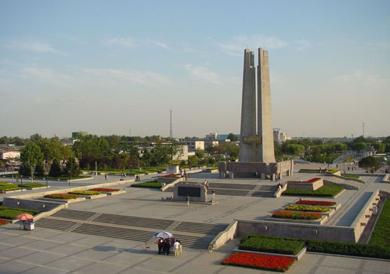

唐山中文别称“凤凰城”，英文简称Tangshan。是中国一个重要沿海港口城市，环渤海区域中心城市，河北省域中心城市，是中国北方重要的对外门户也是东北亚重要的国际航运中心、国际物流中心、环渤海新型工业化基地、京津冀都市圈的核心城市。
唐山市是河北省经济中心，同时也是中国未来发展前景最好的城市之一，中国最有经济发展潜力的城市之一。
唐山市2010年人口近740万（其中市区人口320万），唐山中心城市2010年建成区面积为200平方公里，唐山现在和将来重点发展“四城一河一岛”和以曹妃甸新区为核心的沿海“四点一带”。唐山是全国发达富裕充满活力的大都市，同时也是我国科学发展的前沿。唐山市多次被评为国家园林城市和国家卫生城市及全国文明城市。唐山港是全国7大海港之一。
唐山是历史悠久的古地、文化灿烂的名城、资源丰富的沃土、中国近代工业的摇篮、凤凰涅槃的奇迹、可持续发展的前沿，经济发达的沿海特大城市，一座创造奇迹与梦想的城市。
一、地理位置
唐山市位于欧亚大陆东岸，太平洋西岸，中国东部沿海。位于北回归线以北，东经11 7°3 1′ ~11 9°1 9′，北纬3 8°5 5′~4 0°2 8′。唐山市地处环渤海湾中心地带（南部为著名的唐山湾），东隔滦河与秦皇岛市相望，西与北京、天津市毗邻，南临渤海，北依燕山隔长城与承德地区接壤，是联接华北、东北两大地区的咽喉要地和极其重要的走廊。市中心区位于唐山市中部，东、北与滦县交界，南与丰南区接壤，西和北与丰润区毗邻。东至秦皇岛125公里，南距渤海40公里，西南至天津108公里，至省会石家庄366公里，西北至北京154公里。依据河北省海岸线2008年12月最新修测成果，唐山市大陆海岸线总长229.7公里，比原来延长了33.2公里。唐山市所属大陆海岸线东起乐亭、昌黎县际界线沿河堤，与秦皇岛市接壤，西至涧河口西侧津冀省际北界线，与天津市相邻。唐山市东西广约130 公里，南北袤约150公里，总面积17040平方公里。其中陆地总面积13472平方公里，海域面积达3568平方公里。
二、历史沿革
唐山有着悠久而光荣的历史。据考古证实，在远古时代，唐山的先民就在这块土地上繁衍生息。爪村文化遗址距今约45000年，孟家泉人的发现，至今有约17000年，旧石器时代的遗址在滦县的东灰山，遵化的君子口等处都有发现．自50年代起，唐山地区发现的新石器时代遗址达20多处，今唐山市内的大城山，迁西的西寨村、迁安的安新庄三处遗址具有代表性，它说明人类文明的历史时期当时在这里已经开始。90年代后考古发现进一步证明，唐山人在这块土地上早已创造了灿烂的文化，滦河流域是我国古代文明的发源地之一。
唐山在商周时代属北方侯国孤竹国的地域，当时，人们由木炭烧制、条混盘筑的方法制作三足、平底陶器，已经会制作和使用青铜器，孤竹国伯夷、叔齐的故事流传至今。
战国时唐山为燕国辖地，当时社会生产力比以前有了明显提高，经济和文化向前发展一大步，有了多且精的陶器、铜器，武器和生产工具铜制、铁制并见。
秦汉时唐山为右北平郡、辽西郡、属幽州。
西汉时已经开始学习种植水稻，兴修水利，同时也使冶铁、铸铁、煮盐业发达起来，设官吏专门统管盐铁。
魏、晋、南北朝时期唐山地区仍分属幽州的右北平郡和辽西郡，聚居在这里的各民族相互取长补短，实现着民族文化的融合。隋朝把汉代的州、郡、县三级行政改为州、县两级，今唐山地区东部属北平郡。
唐朝贞观十九年（645年）二月，唐太宗李世民亲率10多万唐军东征高句丽（统治区在今辽河以东及朝鲜半岛北部）。唐太宗于九月下令班师。太子李治从长安千里来迎。
唐太宗率军途经唐地，曾在大城山上屯驻，以后此山遂名“唐山”，这是唐山得名的开始。唐太宗其爱妃曹妃不幸病逝。李世民念其爱妃，特别允许使用国名，将此山命名为唐山。之后成为市名。
唐朝出于屯兵和积粮的需要，在今唐山一带建了许多城池，如平安城（今遵化平安城）、万年城（今迁西三屯营北）、平州城（今卢龙县）、马城（今滦南马城）等，还建筑了一些要塞。又修建了兴唐寺（在今唐山南郊）、净觉寺（在今玉田）等寺庙。
辽金属南京道、中都路、北京路。
元为中书省、大都路、永平路。
明、清属顺天府、永平府、遵化州。
清光绪三年（1877）建乔屯镇，后改为唐山镇。清代分属直隶省永平府和遵化直隶州。随着清代晚期 “ 洋务运动 ” 的兴起，清光绪三年（ 1877年）在这里设开平矿务局，引进西方先进技术办矿挖煤。1889年改名唐山镇，1938年正式建市。这里是中国近代工业发祥地之一：中国第一座现代化煤井、第一条标准轨距铁路、第一台蒸汽机车、第一袋机制水泥、第一件卫生瓷等均诞生在这里，唐山市被誉为 “ 中国近代工业的摇篮 ” 和 “ 中国北方瓷都 ” 。
民国元年（1912年）政区建制均袭清制，1929年，直隶省改称河北省，1939年1月28日，伪冀东防共自治政府鉴于唐山具有经济、政治上的特殊地位明令唐山设市，初称“唐山市政府”，后改称“唐山市公署”，日本宣布投降后，驻北平的国民党派员接收日伪政权，设置督察专员公署。
1946年4月，中共河北省委员会第132二次会议通过唐山设市，同年5月5日，唐山市政府成立。
唐山不仅有悠久的历史，灿烂的文化，而且具有光荣的革命传统，在近现代史上为中国革命事业作出了巨大的贡献。解放战争时期，伟大的唐山人民又成为支援辽沈、平津两大战役的主要后方基地，冀东人民动员人力、物力、财力以“倾家荡产”的巨大牺牲精神，全力支援了两大战役，为战役的胜利作出了巨大的贡献
1949年10月1日，中华人民共和国成立后，唐山市仍为省辖市，辖区12个。
1955年3月，唐山市第一届二次人民代表大会将唐山市人民政府改为唐山市人民委员会。辖区未变。
1958年4月28日，国务院批准唐山市规划唐山专区领导。同年8月29日，河北省第一届人民代表大会第七次会议决定，唐山专员公署驻地由昌黎县迁至唐山市。
1959年6月3日，经中央决定，唐山市为全国45个开放城市 之一。6月8日中共河北省委、省人委决定，唐山专署和唐山市人委合并改设唐山市人民委员会。 1960年4月2日，国务院正式批准撤消唐山专区，原唐山专区管辖的秦皇岛市和迁安、昌黎、乐亭、宝坻、玉田、蓟县、遵化划归唐山市。唐山专区撤消后实际划归唐山市的还有滦县、丰润两县（原为市辖区）和柏各庄农场。同时，唐山市改为省辖市。
1961年5月23日，经国务院批准恢复唐山专区的建制。同年6月1日，河北省人民委员会第14次会议通过恢复唐山专区的决议。从此，唐山专、市分开，唐山市改为专辖市。
1968年1月6日，唐山市革命委员会成立，隶属于唐山地区革命委员会。
1978年3月11日，唐山市改为省辖市。
1982年10月，唐山市第七届人民代表大会撤消唐山市革命委员会，建立唐山市人民政府。
1983年3月3日，国务院批准撤消唐山地区，实行市管县体制。同年5月13日，河北省人民政府通知撤消唐山地区行政公署，5月15日，唐山地区行政公署停止办公。
1984年12月15日，国务院批准唐山市为全国13个“较大城市”之一。是经国务院批准具有独立立法权的城市之一。
三、地形地貌
唐山地势北高南低，为北山南海中部平原，全市陆地总面积13472平方公里。地貌形态主要由新生代以来北部蒙古高原和燕山山地强烈上升，南部平原和渤海地区强烈下降形成的，由北向南呈梯形下降态势，逐渐形成以下6种地貌类型：①低山丘陵。位于京山公路以北，总面积3396.6平方公里，占全市总面积23.74％。②山间河流谷地。主要有洒河-滦河河谷、迁西罗屯滦河河谷、滦河-还乡河河谷3条河谷。总面积400.6平方公里，占全市总面积2.8％。③山间盆地。主要有遵化城关、平安城、迁安城关、新集、建昌营、野鸡坨、榛子镇7个盆地。面积1931.5平方公里，占全市面积13.5％。④山麓台地。主要是丰润、开平两处山麓台地。共309.1平方公里，占全市面积2.16％。⑤山前平原。包括玉田山前冲洪积平原、还乡河-陡河山前冲积平原、滦河-沙河山前冲洪积平原，共3968.9平方公里，占全市27.74％，地下水较丰、水质较好，土壤较肥沃，是本市主要农业。⑥低平原区。主要包括滨海及窝洛沽两个低平原区，总面积4300.9平方公里，占全市30.06％，多洼淀、沼泽，土质黏重，地下水埋藏浅，矿化度高，土壤盐渍化重。
四、气候特征
唐山市属于暖温带半湿润季风型大陆性气候区。冬季受极地大陆性气团控制，气候寒冷，雨雪稀少；春季受大陆性变化气团影响，降水不多，由于偏北或偏西风盛行，蒸发量增大，往往形成干旱天气；夏季由于太平洋副热带高压脊线位置北移，促使西南或东南洋面上暖湿气流向北输送，成为主要降水季节；秋季东南季风减退，极地大陆气团逐渐加强，逐渐转变为秋高气爽的少雨季节。
夏季影响唐山市的天气系统有7种类型，即东北低压、东蒙低涡、冷降、西来槽、横切变、黄河气旋及台风。据统计，西来槽和冷降是影响我市的主要天气系统。我市地处渤海北岸，当热带气旋、强冷空气和温带气旋等天气系统过境时，所伴随的强风和气压的聚变，极易引起迎风岸海水堆积，甚至可使海域中的水体出现整体反应，形成风暴潮。
全市多年平均气温10.6℃，1月份气温最低，月平均气温-5～-8℃，最低气温可达-26℃；7月份气温最高，月平均气温25～26℃，最高气温40℃。
全市多年平均降水量644.2mm，其中汛期降水量526.5mm，占年降水量的82％左右。无霜期平均180天，初霜期一般为10月上旬，终霜期在次年4月初。水热条件较好，适于小麦、玉米、水稻、花生等多种作物和各种干鲜果品生长。
五、河流及水系
唐山市境内有河流70多条，其中主要有滦河、陡河、还乡河、沙河等，境内主要河流为滦河水系干支流及北三河水系蓟运河流域遵化以北的沙河诸支流小河。这些河流在境外的流域面积共计53576.1平方公里，占总集水面积的95.0％。多年平均入境水量为32.56亿立方米。
六、行政级别及区划
唐山市是国务院批准的较大的市， 1984年10月作为第一批与重庆、青岛、大连等城市同时获批。河北省域中心城市、中国地级市。
2000年，唐山市辖5个市辖区、7个县，代管3个县级市。
2002年2月1日，经国务院批准（国函[2002]7号），调整唐山市部分行政区划：撤销县级丰南市设立唐山市丰南区，撤销丰润县和唐山市新区设立唐山市丰润区，亮甲店镇设立国家高级技术产业园区。
2005年，唐山市辖6个市辖区、6个县、代管2个县级市。
唐山市 面积13472平方千米，人口735万（2009年6月）。
路北区 面积120平方千米，人口70万人。 邮编063000。区人民政府驻乔屯街道。
路南区 面积67.33平方千米，人口35万人。 邮编063000。区人民政府驻学院路街道。
古冶区 面积253.4平方千米，人口43万人。 邮编063100。区人民政府驻林西新林道。
开平区 面积251.3平方千米，人口33万人。 邮编063021。区人民政府驻开平镇。
丰润区 面积1334平方千米，人口90万人。 邮编064000。区人民政府驻幸福道。
丰南区 面积1568平方千米，人口60万人。 邮编063300。区人民政府驻丰南镇。
唐海县 面积725平方千米，人口30万人。 邮编063200。县人民政府驻唐海镇。
滦 县 面积1053平方千米，人口55万人。 邮编063700。县人民政府驻地滦州镇。
滦南县 面积1521平方千米，人口70万人。 邮编063500。县人民政府驻倴城镇。
玉田县 面积1165平方千米，人口64.2万人。邮编064100。县人民政府驻玉田镇。
乐亭县 面积1308平方千米，人口50万人。 邮编063600。县人民政府驻乐亭镇。
迁西县 面积1439平方千米，人口36.4万人。邮编064300。县人民政府驻兴城镇。
遵化市 面积1521平方千米，人口70万人。 邮编064200。 市人民政府驻遵化镇。
迁安市 面积1208平方千米，人口68万人。 邮编064400。市人民政府驻迁安镇。
汉沽管理区 面积150平方公里，人口4.7万。 邮编301501。区人民政府驻汉沽场部。
芦台经济技术开发区 面积133平方公里，人口4.1万。邮编301501。区人民政府驻芦台场部。
唐山国家级高新技术开发区 面积31平方公里,人口3.3万. 邮编063020。区人民政府驻高新区街道。
南堡开发区 面积412平方公里,人口5万. 邮编063305. 区政府驻滨海镇。
海港经济开发区 面积147.47平方公里, 邮编063611。
曹妃甸工业区 面积为310平方公里, 邮编063200 。
乐亭新区包括乐亭县、海港经济开发区两部分。
曹妃甸新区包括曹妃甸工业区、曹妃甸国际生态城、唐海县、南堡开发区四部分，于2008年10月成立，规划面积1943.72平方公里，陆域海岸线约80公里。
城市环境
唐山是震后崛起的新型城市，城市功能分区明确，市政设施配套，环境清新优美，现代化水平较高。城市自来水普及率100%、燃气普及率99.8%、污水集中处理率99.7%、供热普及率100%，均居全国同等城市领先水平。
美丽的唐山南湖风景区1990 年唐山在全国第一个荣获联合国“人居荣誉奖”， 2004 年获得联合国“迪拜国际改善居住环境最佳范例奖”。
唐山2008年起，以“四大功能区”建设(曹妃甸国际生态城、凤凰新城、南湖生态城、空港城)为重点的现代化大规模基础设施建设格局已经形成。
唐山湾生态城（曹妃甸国际生态城）（唐山与瑞典意大利荷兰新加坡等合作，全国只有上海浦东中英生态城，天津滨海新区中新生态城可以与之相媲美）到2020年，将累计投资一万亿元，建成一座120万人的世界一流的生态城市、港口城市、示范性城市、国际性城市和环渤海中心大都市，这座由智慧的唐山人民建设起来的国际生态大都市，回答了未来100年甚至200年后世界城市发展的方向！2009年3月起大规模建设，到2010年10月已完成投资600亿元。
凤凰新城规划面积23平里，是具有商务中心、文化中心、金融中心、总部基地等功能的现代化标志性新城区。市政基础设施工程、公建、世界巨头投资的商业及高档住宅项目进展得如火如荼，2008-2009年已经完成投资80亿元，2010年投资100亿元左右，2011年开始进入了大规模建设的新阶段。
南湖生态城最新规划面积105平方公里，是市民中心、休闲度假胜地、在全国有很高知名度的文化创意园区、高科技园区和生态型示范新城。扩湖工程、环城水系一期、遗址公园、环湖景观大道、封山绿化、开滦国家矿山公园等工程2008年底已经完工，市民中心、工人文化宫、南湖美食城、高档住宅楼、写字楼、五星级大酒店、高科技装备制造业产业园和动漫基地以及平房改现代化楼房等项目在2009年已经开始建设，2010年将投资550亿元左右进行大规模建设，2011年起南湖生态城全面崛起！
空港城规划面积20平方公里，是以高新技术产业、现代物流业、现代服务业等新经济产业为支撑的国际化、创新型新城。概念性总体规划已经完成，村庄搬迁改造、市政基础设施建设在2009年已经开始全面启动了，进展顺利，2011年开始全面崛起。
七、民族
唐山市作为少数民族散居城市，有满、回、蒙古等47个少数民族成分，有3个民族乡、2个少数民族占主体的镇、175个民族村，少数民族人口260414人，占全市总人口的3.62%。
八、人口
2010年，唐山全市人口保持低速平稳增长，到2010年年末唐山全市户籍总人口757.73万人，比上年末增加23.8万人，其中市区390.00万人。 在总人口中，农业人口367.56万人，比上年增加10.54万人；非农业人口390.03万人，比上年增加0.95万人；男性人口372.34万人，女性人口361.56万人，男女性别比为103:100。
九、自然资源
唐山气候温和，地貌多样，土质肥沃，是多种农副产品的富集产区，被称为“京东宝地”。北部山区盛产板栗、核桃、苹果、红果等干鲜果品，“京东板栗”驰名中外；中部平原盛产玉米、小麦、水稻、花生等农副产品，素有“冀东粮仓”之美誉；南部沿海既是渤海湾的重要渔场，又是原盐的集中产区 , 南堡盐场是亚洲最大盐场。沿海陆域海岸线长 229.7公里 ，滩涂和浅海开发潜力很大。矿产资源品种多、储量大、质地优良、分布集中、易于采选。目前已发现并探明储量的矿藏有 47 种。煤炭保有量 62.5 亿吨，为全国焦煤主要产区；铁矿保有量 57.5 亿吨，是全国三大铁矿区之一。石油、天然气、石灰岩、黄金等储量也十分巨大。
（一）土地
全市土地资源以土地利用现状调查分类体系为依据， 1986 年以前无概查。 1988 年按全国规定的一、二级分类及河北省补充的三级分类规定进行了概查。唐山市概查土地总面积 20675516 亩，其中耕地面积817万亩，占全市国土面积的40.2%，由于人口迅速增长和经济建设用地逐年增加，人均占有耕地面积逐步减少，到 1986 年，全市人均耕地为 1.44 亩。
（二）水资源
唐山市水资源比较丰富，历史上主要是防御水灾，开发利用很少。解放以后，随着工农业生产的发展，水成为发展国民经济的重要条件，几十年来经过详细勘察和计算，水资源情况已基本清楚。现在可用水量分两类：
（一）地表水：地表水资源量146200万立方米。省级以上工程供水量：潘家口水库蓄水主要供天津市、唐山市工农业用水，其水量分配，保证率 75% 时，可调节水量 19.5 亿立方米，分配给天津市 10 亿立方米，唐山市 9.5 亿立方米。各类大中小型保证率 50% 时，年可供水量 3.89 亿立方米，保证率 75% 时年可供水量 2.36 亿立方米。
（二）地下水：地下水资源量136900万立方米。主要是平原区浅层淡水，可用量 9.39 亿立方米。山丘区多年平均河川基流量 4.01 亿立方米。平原浅层地下水开采量逐年增大。1985 年开采13.96 亿立方米， 1986 年开采 14.4 亿立方米。
（三）矿产
唐山市矿产资源品种非常齐全，已发现并探明储量的矿藏有50余种。
（一）金属矿产：全市蕴藏着丰富的铁矿资源，其保有量62 亿吨，次于鞍山 ，多于攀枝花，为国家三大铁矿集中区之一，境内蕴藏着丰富的金矿资源，主要分布在遵化、迁西两县。金矿开采历史悠久。相传唐代高句丽人就在金厂峪一带挖金，清朝末年迁西金厂峪已是国内三大金矿产地之一。群众采金从未间断，已探的唐山地区黄金储量 78,543 公斤。唐山市含锰地层为长城系高于庄组的中下部，储量达 21.37 万吨。另外，唐山还有银矿、铜矿、铝土矿、钼矿、锡矿、汞矿等多种金属矿产。
（二）非金属矿产：唐山地下蕴藏非金属矿主要有石灰岩、白云岩、石英砂岩、耐火粘土、铁矾土、油石、柘榴石、石墨、油泡石粘土等。
（四）能源
唐山能源资源十分丰富，大规模煤炭开采已有100 多年。石油、天然气从1956 年开始普查，1964 年开展石油地质勘察，已发现5 个油气田。与煤炭 伴生的煤成气储量也很大。此外，还有风能、太阳能、地热能等多种资源。
（一）煤炭：煤炭保有量62.5亿吨，是国内焦煤的重要产区，主要赋存在 4 个含煤构造盆地石炭二迭系地层中，即开平构造盆地、荆各庄构造盆地、车轴山构造盆地、蓟玉构造盆地。其中以开平含煤构造盆地最大。
（二）石油及天然气：现已发现 5 个油气田，含油层系较多是冀东油田石油地质的特征之一。2007年新探明储量10亿吨大油田。已发现的油气资源不仅有常规油，而且有凝析油、稠油和天然气。
（三）水能：唐山市水能资源主要集中在北部山区和半山区的大中河流上，由于水量丰富，河床落差大，地形条件优越，水能资源丰沛。经估算，全市共有水量理论蕴藏量70 . 3万千瓦。按河系划分，滦河系58 . 91万千瓦，蓟运河系9. 17万千瓦，陡河0 . 15万千瓦，引滦入还、引还入陡2. 07万千瓦。
（四）其它能源：还有煤成气、太阳能、风能和地热能等。
（五）植物
唐山辖区内植物种类繁多，林木资源十分丰富，据文献记载，两三千年之前燕山山地林丛遍野，松柏涛涛，原始森林茂密，南麓枣、栗、榛等野生经济林树种密布。树木种类有47科、67属、133种，果树为8科、12属、22种。全市有天然草场67.52万亩，其他草地312.2万亩，2005年可产鲜草120724 . 3万公斤，可载标准畜51.8万个羊单位。全市野生药材种类繁多，资源蕴藏量较丰富。解放后历次普查资源统计，植物药材隶属123科194种。此外，野生食用菌、淡水藻类、海水藻类品种繁多、分布广泛。
（六）动物
唐山优越的地理条件和自然环境，为多种野生动物繁衍、栖息创造了条件。兽类有虎、豹、熊、豺、狼、獾、鹿、獐、狍、猴、猿、狐、狸、貉、兔、獭、紫貂、黄羊、野猪、鼠、黄鼠狼、臊鼠、松鼠、香鼠、鼢鼠、刺猬等。随着人类活动范围的扩大和乱捕、滥猎，野生动物资源惨遭破坏，早在本世纪三四十年代虎、豹、黑熊、鹿、猴子等野生动物先后绝迹。爬行类以无蹼壁虎分布最广，其次为水塘中的鳖及各种无毒蛇类，两栖动物以花背蟾蜍、青蛙为主。唐山地区濒临渤海，河流众多，近水地区森林茂密，草木繁盛，不单是多种留鸟的终年栖息地，也是多种候鸟的中转站，多种鸟类达200多种。全市淡水鱼有16科46种属。海洋动物更是多的不计其数。
十、经济
2010年唐山完成地区生产总值4469.08亿元，同比增长13.1%；全部财政收入439亿元，其中一般预算收入196亿元，分别增长6.2%和15.5%；城镇居民人均可支配收入和农民人均纯收入分别达到19515元和8310元，同比分别增长8.1%和12%。全社会固定资产投资2616亿元，同比增长20%左右；其中，城镇固定资产投资完成2210亿元，同比增长23%。 支柱产业为精品钢铁、装备制造、综合化工、现代物流、高新技术、旅游休闲、服务产业、电力行业、新型建材、高效农业。
十一、交通运输
唐山交通四通八达。与北京联合建设的唐山港京唐港区，已与国内外150 多个港口实现通航，唐山港曹妃甸港区深水码头已基本建成！唐山地处交通要塞，是华北通往东北的咽喉地带，京沈、京秦、大秦三大铁路横贯全境。津山、京沈干线公路横跨东西，东有秦皇岛港，西邻天津港，新建的唐山港位于津秦两港之间。京沈（唐山段）、唐津、唐港、唐曹，承唐，沿海，迁曹等多在建高速公路交织成网，环城立体互交，构成了非常便捷的现代化交通网络。现在唐山机场已经正式通航，唐山现在的交通更加便捷，更加人性化！
唐山致力于大力建设公路、 高速公路、铁路、地铁轻轨、管道、航空、港口等综合性的交通运输，为把唐山建设成为北方经济中心城市、东北亚门户城市、国际航运物流贸易中心而奋发图强。
（一）高速公路
截止2010年9月，唐山建成及在建高速公路里程约为800公里，构筑成"O+X"型的高速公路主骨架，达到世界发达国家和地区水平。高速公路网的崛起，一改城市之间的时空概念。从唐山进京（北京）一个小时，到卫（天津）、出关（东北）1个小时以内，下海（京唐港区、曹妃甸港区）30分钟，极大地促进了唐山与这些地区间人流、物流、信息流的沟通，改善了唐山的投资环境。
(二)铁路
已经建成的铁路有国家级铁路干线京哈铁路、津山铁路、大秦铁路、迁曹铁路，地方铁路唐山坨港铁路、遵小铁路、唐港铁路；正在建设的有津秦城际铁路、蒙曹铁路；规划的有京唐曹城际铁路、京哈城际铁路、唐曹城际铁路、曹沧城际铁路。
（三）轨道交通
唐山市已经把轻轨和地铁建设列入十二五规划，聘请铁道部第三勘察设计院对我市的地铁轻轨线网进行规划设计，一旦获批将会马上开工建设。 根据有关消息报道唐山市区及郊区初步规划5条地铁，唐山市中心区到曹妃甸新区将会建设轻轨，唐山的第一条地铁将会贯穿新华道全境经过新火车站，唐山的第一条轻轨将在曹妃甸新区境内出现。
（四）航空
唐山三女河机场。机场预计2011年旅客吞吐量为150万人次，2015年为500万人次，到2020年达到1200万人次；货邮吞吐量预计2015年为3000吨，2020年为6000吨，到2040年达到20000吨。开通7条远距离航线，分别是上海、广州、成都、昆明、长沙、西安、三亚；近距离航线4条，分别是石家庄、大连、青岛、哈尔滨。 2010年7月13日，唐山三女河机场正式开航。在曹妃甸新区已经预留曹妃甸国际机场的建设用地。
（五）港口
唐山港分为京唐港区、曹妃甸港区和丰南港区，形成分工合作、协调互动、三港齐飞的总体发展格局。其中京唐港区于1992年正式通航，曹妃甸港区于2005年12月18日正式通航，京唐港区和曹妃甸港区正在大规模建设和快速发展中，丰南港区投资300多亿元，已开工建设。 唐山港将在2020年前成为吞吐量高达8亿吨以上的全球前3强的超级国际化深水大港、国际航运中心国际物流中心和国际贸易中心。
唐山规划在曹妃甸建设国际游轮港口，开通国内主要旅游港口城市的旅游航线，适时开通国际航线。
唐山市规划在唐山湾国际旅游岛建设唐山国际游轮母港，初步预计投资30亿元。
唐山市谋划在曹妃甸新区3号港池附近，建设约10平方公里全国最大的保税港区，目前已经上报到国务院，2011年10月份有望获批。
2010年唐山港全年完成货物吞吐量2. 6亿吨，暴增42.07%，增长速度遥居中国规模以上港口第1名。唐山港顺利进入全国7大海港行列，进入全国3大海港和全球3大海港指日可待。
十二、地位荣誉
拥有制定地方法规权限的较大的市，河北省两大省域中心城市，河北省经济中心，中国未来十年（2010年--2020年）24个最具发展潜力城市之一，沿海开放城市。
联合国人居荣誉奖
联合国迪拜国际改善居住环境最佳范例奖
联合国HBA·中国范例卓越贡献最佳奖
连续5次荣获“全国双拥模范城”
中国人居环境范例奖
中国优秀旅游城市
国家环保模范城市
国家园林城市
中国综合实力前50强城市
全国再就业先进城市
全国双拥模范城
中国大陆宜居城市
中国物流节点城市
中国最具世界影响力城市
中国42个全国性综合交通枢纽之一
新亚欧大陆桥东方桥头堡
福布斯大陆最佳商业城市
2010年中国信息化50强城市
工业化和信息化融合实验区试点城市
国家知识产权试点城市
国家首批创新型试点城市
首批国家级创建创业型城市
全国绿化模范城市
国家节能与新能源汽车示范推广城市
2010年全国首批用公积金贷款建保障房试点城市
河北省唯一入选2010年全国相对富裕地区排行的城市
河北省唯一入选新中国成立60周年“中国大城市发展代表”的城市
2010年物流中心城市最佳投资环境奖
2013年第八届中国国际花卉博览会举办地
2016年世界园艺博览会的承办城市
2011中国最佳投资服务城市前十强城市之一
2011中国最具发展潜力园区前十强--------唐山曹妃甸新区